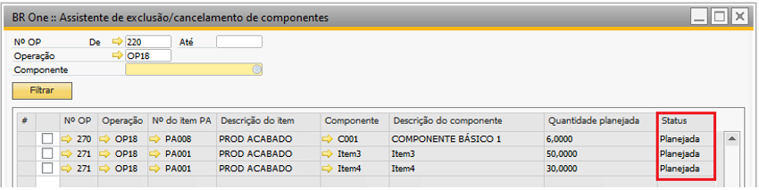
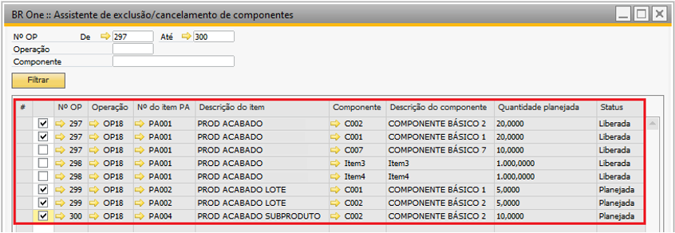
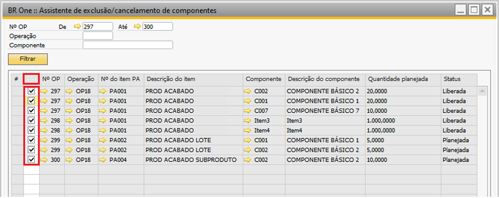

Assistente de exclusão e cancelamento de componentes
Para acessar a tela de Assistente de exclusão/cancelamento de componentes é necessário ir ao menu:
Produção -> Manutenção -> Assistente de exclusão/cancelamento de componentes
Essa tela permite realizar a exclusão ou cancelamento de componentes das linhas da OP.
Para carregar a lista de componentes na tela, o usuário tem três opções de filtro:
Nº OP: Traz componentes de acordo com um intervalo de número de OPs.
Operação: Traz componentes que pertencem à operação selecionada.
Componente: Traz todas as ocorrências do mesmo componente em linhas de OPs.
{kind=link}
Ao filtrar pelo nº da OP, se o usuário selecionar o filtro De ou o filtro Até, e o valor do campo Até não for maior ou igual ao valor do campo De, a seguinte mensagem será exibida:

BR One :: Campo “Até” deve ser maior ou igual ao campo “De”.
Após selecionar pelo menos um filtro, o usuário deve clicar no botão Filtrar para carregar os componentes na tela. Se o usuário tentar filtrar os componentes sem selecionar nenhum filtro, será mostrada a seguinte mensagem:
{kind=link}
BR One :: Selecione ao menos um filtro para que sejam exibidos os componentes.
Se o usuário tentar filtrar os componentes e o filtro não trazer nenhum resultado, será mostrada a seguinte mensagem:
{kind=link}
BR One :: Não foi encontrado nenhum componente de acordo com os filtros selecionados.
Se a configuração Permitir edição de OP após liberação não estiver marcada e o usuário não possuir a autorização Ordem de produção – permitir edição após liberação, o filtro irá trazer somente as OPs que o usuário tem permissão para editar (status “Planejada”).
{kind=link}
Após filtrar os componentes corretamente, a seguinte mensagem será exibida:

BR One :: Filtro realizado com sucesso.
Após realizar o filtro, os componentes serão carregados na tela, onde há uma caixa de seleção para marcar cada componente que se deseja excluir/cancelar.
{kind=link}
É possível marcar/desmarcar todas as linhas ao clicar duas vezes na coluna que contém as caixas de seleção.
{kind=link}
Ao clicar no botão Executar, todos os componentes selecionados serão excluídos ou cancelados. Se a OP possuir o status “Planejada”, o componente será excluído, e se a OP possuir o status “Liberada”, o componente será cancelado.
Se o usuário clicar no botão Executar sem antes ter carregado os componentes na tela, será mostrada a seguinte mensagem:
{kind=link}
BR One :: Selecione ao menos um filtro e clique em “Filtrar” para que sejam exibidos os componentes.
Se o usuário clicar no botão Executar sem antes ter selecionado pelo menos um componente, será mostrada a seguinte mensagem:
{kind=link}
BR One :: Selecione pelo menos um componente a ser excluído/cancelado.
Se o usuário selecionar algum componente em que a OP tenha o status “Liberada”, a configuração Permitir edição de OP após liberação não estiver marcada, o campo Permitir edição de OP após liberação da OP também não estiver marcado, e clicar no botão Executar, a seguinte mensagem será exibida:

BR One :: Configuração “Permitir edição de OP após liberação” deve ser marcada antes de cancelar um componente de uma OP com status “Liberada”. (Linha X)
Se o usuário selecionar todos os componentes de uma determinada OP e clicar no botão Executar, a seguinte mensagem será exibida:
{kind=link}
BR One :: Não é permitido excluir/cancelar todos os componentes de uma OP. (OP nº X)
Após selecionar todos os componentes e executar o processo de exclusão/cancelamento de componentes de linhas das OPs, a seguinte mensagem será exibida:

BR One :: Operação realizada com sucesso.